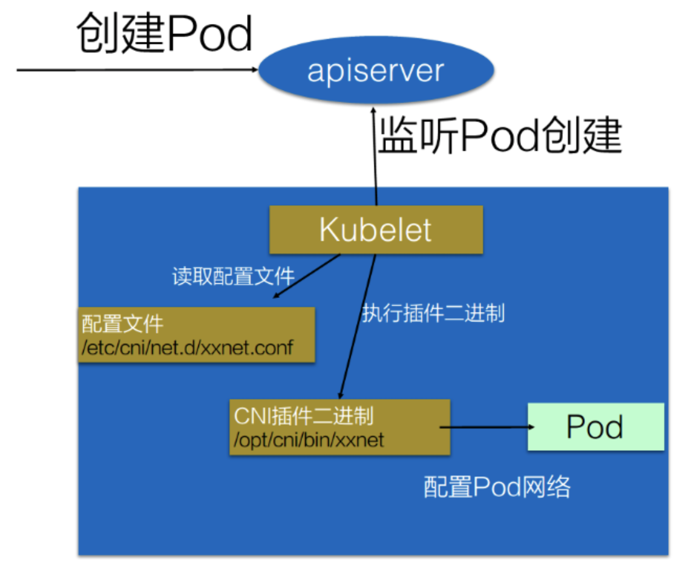
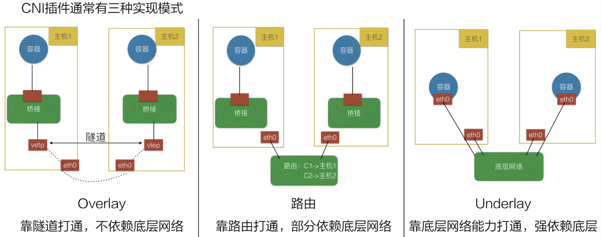
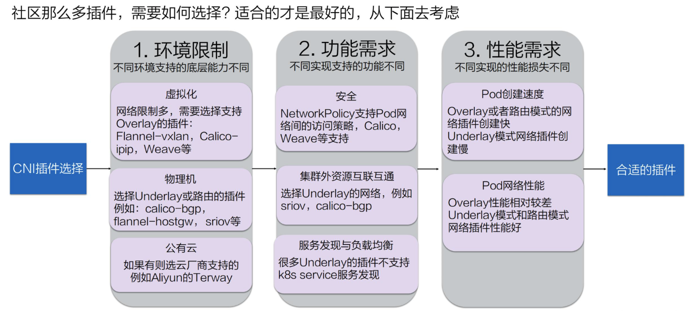
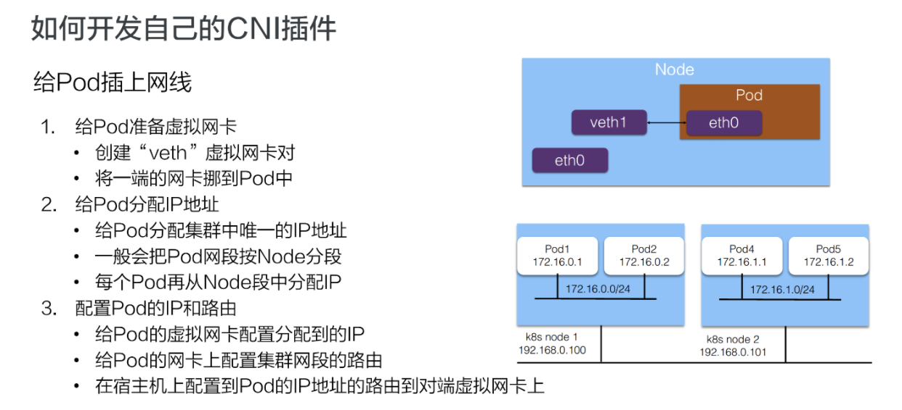

理解CNI 和 CNI插件
目标
- CNI 定义
- CNI如何选择
- 开发自己的CNI插件
什么是CNI
CNI: Container Network Interface，即容器网络的 API 接口
CNI Plugin : 一系列实现 CNI API 接口的网络插件 CNI 插件主要解决的问题：
- 配置Pod网络空间
- 打通Pod之间网络连同
Kubelet 通过这个标准的 API 来调用不同的网络插件以实现不同的网络配置方式。
常见的CNI接口包括： Calico Flannel Terway Weave Net Contiv
Kubernetes 中如何使用
kubernetes CNI 插件启用流程
- 配置CNI配置文件（/etc/cni/net.d/XXXnet.conf）
- 安装CNI 二进制插件(/opt/cni/bin/xxnet)
- 在这个节点上创建Pod
- Kubelet 会根据CNI 配置文件执行CNI插件
- Pod网络配置初始化
如图所示：

CNI如何选择
CNI 的实现类型，可分为三类：
- Overlay, 隧道
- 路由
- Underlay, 底层网络
如图：

如何选择自己的插件呢？

环境限制
不同环境中所支持的底层能力是不同的。
- 虚拟化环境（例如 OpenStack）中的网络限制较多，比如不允许机器之间直接通过二层协议访问，必须要带有 IP 地址这种三层的才能去做转发，限制某一个机器只能使用某些 IP 等。在这种被做了强限制的底层网络中，只能去选择 Overlay 的插件，常见的有 Flannel-vxlan, Calico-ipip, Weave 等等；
- 物理机环境中底层网络的限制较少，比如说我们在同一个交换机下面直接做一个二层的通信。对于这种集群环境，我们可以选择 Underlay 或者路由模式的插件。Underlay 意味着我们可以直接在一个物理机上插多个网卡或者是在一些网卡上做硬件虚拟化；路由模式就是依赖于 Linux 的路由协议做一个打通。这样就避免了像 vxlan 的封包方式导致的性能降低。这种环境下我们可选的插件包括 clico-bgp, flannel-hostgw, sriov 等等；
- 公有云环境也是虚拟化，因此底层限制也会较多。但每个公有云都会考虑适配容器，提升容器的性能，因此每家公有云可能都提供了一些 API 去配置一些额外的网卡或者路由这种能力。在公有云上，我们要尽量选择公有云厂商提供的 CNI 插件以达到兼容性和性能上的最优。比如 Aliyun 就提供了一个高性能的 Terway 插件。
功能需求
-
安全需求； K8s 支持 NetworkPolicy，就是说我们可以通过 NetworkPolicy 的一些规则去支持“Pod 之间是否可以访问”这类策略。但不是每个 CNI 插件都支持 NetworkPolicy 的声明，如果大家有这个需求，可以选择支持 NetworkPolicy 的一些插件，比如 Calico, Weave 等等。
-
是否需要集群外的资源与集群内的资源互联互通； 大家的应用最初都是在虚拟机或者物理机上，容器化之后，应用无法一下就完成迁移，因此就需要传统的虚拟机或者物理机能跟容器的 IP 地址互通。为了实现这种互通，就需要两者之间有一些打通的方式或者直接位于同一层。此时可以选择 Underlay 的网络，比如 sriov 这种就是 Pod 和以前的虚拟机或者物理机在同一层。我们也可以使用 calico-bgp，此时它们虽然不在同一网段，但可以通过它去跟原有的路由器做一些 BGP 路由的一个发布，这样也可以打通虚拟机与容器。
-
K8s 的服务发现与负载均衡的能力。 K8s 的服务发现与负载均衡就是我们前面所介绍的 K8s 的 Service，但并不是所有的 CNI 插件都能实现这两种能力。比如很多 Underlay 模式的插件，在 Pod 中的网卡是直接用的 Underlay 的硬件，或者通过硬件虚拟化插到容器中的，这个时候它的流量无法走到宿主机所在的命名空间，因此也无法应用 kube-proxy 在宿主机配置的规则。
这种情况下，插件就无法访问到 K8s 的服务发现。因此大家如果需要服务发现与负载均衡，在选择 Underlay 的插件时就需要注意它们是否支持这两种能力。
性能需求
我们可以从 Pod 的创建速度和 Pod 的网络性能来衡量不同插件的性能。
-
Pod 的创建速度。当我们创建一组 Pod 时，比如业务高峰来了，需要紧急扩容，这时比如说我们扩容了 1000 个 Pod，就需要 CNI 插件创建并配置 1000 个网络资源。Overlay 和路由模式在这种情况下的创建速度是很快的，因为它是在机器里面又做了虚拟化，所以只需要调用内核接口就可以完成这些操作。但对于 Underlay 模式，由于需要创建一些底层的网络资源，所以整个 Pod 的创建速度相对会慢一些。因此对于经常需要紧急扩容或者创建大批量的 Pod 这些场景，我们应该尽量选择 Overlay 或者路由模式的网络插件。
-
Pod 的网络性能。主要表现在两个 Pod 之间的网络转发、网络带宽、PPS 延迟等这些性能指标上。Overlay 模式的性能较差，因为它在节点上又做了一层虚拟化，还需要去封包，封包又会带来一些包头的损失、CPU 的消耗等，如果大家对网络性能的要求比较高，比如说机器学习、大数据这些场景就不适合使用 Overlay 模式。这种情形下我们通常选择 Underlay 或者路由模式的 CNI 插件。
如何开发自己的CNI插件
CNI 插件的实现通常包含两个部分：
- 一个二进制的 CNI 插件去配置 Pod 网卡和 IP 地址。这一步配置完成之后相当于给 Pod 上插上了一条网线，就是说它已经有自己的 IP、有自己的网卡了；
- 一个 Daemon 进程去管理 Pod 之间的网络打通。这一步相当于说将 Pod 真正连上网络，让 Pod 之间能够互相通信。
给 Pod 插上网线

步骤如下：
-
给 Pod 准备一个网卡。通常我们会用一个 “veth” 这种虚拟网卡，一端放到 Pod 的网络空间，一端放到主机的网络空间，这样就实现了 Pod 与主机这两个命名空间的打通。
-
给 Pod 分配IP地址。这个 IP 地址在集群里需要是唯一的。如何保障集群里面给 Pod 分配的是个唯一的 IP 地址呢？ 一般来说我们在创建整个集群的时候会指定 Pod 的一个大网段，按照每个节点去分配一个 Node 网段。比如说上图右侧创建的是一个 172.16 的网段，我们再按照每个节点去分配一个 /24 的段，这样就能保障每个节点上的地址是互不冲突的。然后每个 Pod 再从一个具体的节点上的网段中再去顺序分配具体的 IP 地址，比如 Pod1 分配到了 172.16.0.1，Pod2 分配到了 172.16.0.2，这样就实现了在节点里面 IP 地址分配的不冲突，并且不同的 Node 又分属不同的网段，因此不会冲突。这样就给 Pod 分配了集群里面一个唯一的 IP 地址。
-
配置 Pod 的 IP 和路由
- 第一步，将分配到的 IP 地址配置给 Pod 的虚拟网卡；
- 第二步，在 Pod 的网卡上配置集群网段的路由，令访问的流量都走到对应的 Pod 网卡上去，并且也会配置默认路由的网段到这个网卡上，也就是说走公网的流量也会走到这个网卡上进行路由；
- 最后在宿主机上配置到 Pod 的 IP 地址的路由，指向到宿主机对端 veth1 这个虚拟网卡上。这样实现的是从 Pod 能够到宿主机上进行路由出去的，同时也实现了在宿主机上访问到 Pod 的 IP 地址也能路由到对应的 Pod 的网卡所对应的对端上去。
给 Pod 连上网络
刚才我们是给 Pod 插上网线，也就是给它配了 IP 地址以及路由表。那怎么打通 Pod 之间的通信呢？也就是让每一个 Pod 的 IP 地址在集群里面都能被访问到。
一般我们是在 CNI Daemon 进程中去做这些网络打通的事情。通常来说是这样一个步骤：
- 首先 CNI 在每个节点上运行的 Daemon 进程会学习到集群所有 Pod 的 IP 地址及其所在节点信息。学习的方式通常是通过监听 K8s APIServer，拿到现有 Pod 的 IP 地址以及节点，并且新的节点和新的 Pod 的创建的时候也能通知到每个 Daemon；
- 拿到 Pod 以及 Node 的相关信息之后，再去配置网络进行打通。
- 首先 Daemon 会创建到整个集群所有节点的通道。这里的通道是个抽象概念，具体实现一般是通过 Overlay 隧道、阿里云上的 VPC 路由表、或者是自己机房里的 BGP 路由完成的；
- 第二步是将所有 Pod 的 IP 地址跟上一步创建的通道关联起来。关联也是个抽象概念，具体的实现通常是通过 Linux 路由、fdb 转发表或者OVS 流表等完成的。Linux 路由可以设定某一个 IP 地址路由到哪个节点上去。fdb 转发表是 forwarding database 的缩写，就是把某个 Pod 的 IP转发到某一个节点的隧道端点上去（Overlay 网络）。OVS 流表是由Open vSwitch 实现的，它可以把 Pod 的 IP 转发到对应的节点上。
课后思考实践
- 在自己公司的网络环境中，选择哪种网络插件最适合？
- 尝试自己实现一个 CNI 插件。